List of Social Media Sites
Instagram

Instagram has grown to be one of the most popular social networks for photo sharing that the mobile web has ever seen.
It's the ultimate social network for sharing real-time photos and short videos while on the go.
Instagram lets registered users upload photos or videos to the service. Users can apply various digital filters to their images, and add locations through geotags.
They can add hashtags to their posts, linking the photos up to other content on Instagram featuring the same subject or overall topic.
Instagrams user demographic is mainly focused on youngpeople in urban areas.
facebook

The probably biggest and best known social media sites of all. Facebook has been dominating the field for years.
The Facebook website was launched on February 4, 2004, by Mark Zuckerberg, along with fellow Harvard College students.
The site has gained over 2 Billion users over the course of its existence. Thats nearly a quarter of the human population.
Facebooks mechanisms are very easy to grasp and don't require any technical knowledge whatsoever. Facebook being one of the first modern
social networks pioneered many concepts like NewsFeed, Following, Likes and Instant Messaging. regarding Instant Messaging Messenger,
facebooks messenger app, is the worlds second most used messenger, only topped by WhattsApp.
twitter

Twitter is known as the real-time, public microblogging network where news breaks first.
It's limited amount of characters (140 or 280) makes it unique in the micro-blogging business.
Twitter is mostly used to share your opinions or commenting on other people's opininions.
Twitter shares some key similarities with Facebook still has a great impact on society. Especially
in situations where a public statement by a spokesman would be needed. US President Trum is famous
because of his often controversial public statements on twitter.
Pinterest
Pinterest is photo-sharing platform which serves the purpose of sharing your ideas, hobbys and projects
with others. It's pin-board resembling design only demonstrates the importance of images and photos in
today's web.
Pinterest is also one of the first social netwroks that uses it's platform to integrate
interesting products from certain partner retailers. With more than 175 million active users a month
it is considered one of the biggest social networks.
tumblr

Tumblr is a microblogging and social networking website
The service allows users to post multimedia and other content to a short-form blog.
Users can follow other users' blogs and reblog them. Reblogging is a key feature of tumblr and enables
the users to mention and quote othe blog posts of the site. This connects the community more than usual.
Tumblr is primarily used by teenagers and college students. Most of the female. This fact makes the community very liberal and modern.
LinkedIn

LinkedIn is a business- and employment-oriented social networking service which is it is mainly
used for professional networking, including employers posting jobs and job seekers posting their CVs.
LinkedIn allows members (both workers and employers) to create profiles and "connections"
to each other in an online social network which may represent real-world professional relationships.
LinkedIn had 500 million members in 200 countries, out of which more than 106 million members are active.
Reddit
Reddit is a social news aggregation, web content rating, and discussion website.
Registered members submit content to the site such as links, text posts, and images, which are then voted up or down by other members.
Posts are organized by subject into user-created boards called "subreddits", which cover a variety of topics including
news, science, movies, video games, music, books, fitness, food, and image-sharing.
Medium

Medium is an online publishing platform developed by Twitter co-founder and former CEO Evan Williams.
The platform has a great amount of amateur and professional people and puplications.
Good features are the tag system and the subscripions to become a member for a monthly fee of $5.
With a Medium membership, you are granted acces to exclusive content, audio narrations of popular stories and much more.
Minds

Minds is an open source social networking service integrating the blockchain to reward the community
with ERC20 tokens for various contributions to the network. Users can use their tokens to promote their content
or to crowdfund and tip other users by subscribing to them monthly in exchange for exclusive content and services.
Minds has drawn comparison to platforms such as Facebook with regards to functionality.
Users earn Minds tokens each day based on their contributions to the network relative to the community.
At the end of each day, a user's contribution score determines their individual share of the daily reward pool of tokens.